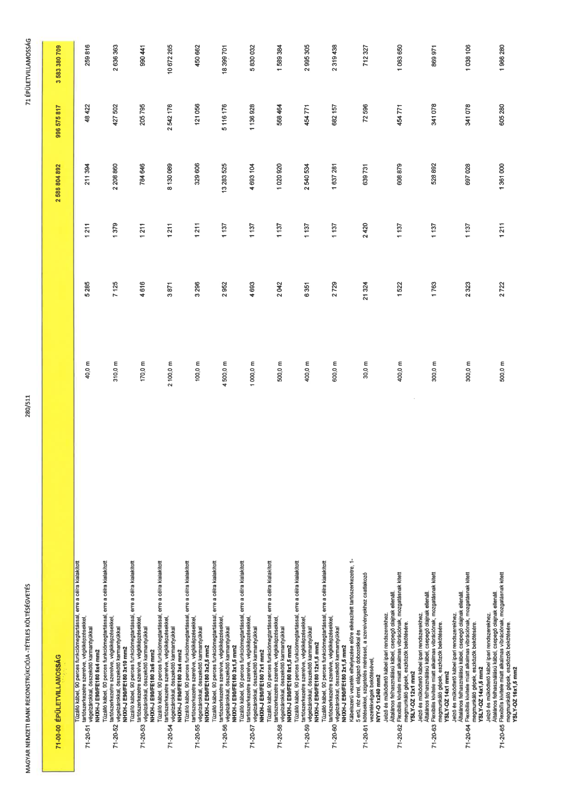

| Tétel | Menny. | Egys. | Anyag e.ár (net HUF) | Díj e.ár (net HUF) | Anyag összesen (net HUF) | Díj összesen (net HUF) | Anyag+Díj összesen (net HUF) |
|---|---|---|---|---|---|---|---|
| 71-00-00 ÉPÜLETVILLAMOSSÁG | NaN | NaN | 0 | 0 | 2 586 804 892 | 996 575 817 | 3 583 380 709 |
| Tűzálló kábel, 90 perces funkcióimegtartással, erre a célra kialakított tartószerkezetre szerelve, végkiképzésekkel, végelzárókkal, összekötő karmantyúkkal NHXH-J E90/FE180 5x4 mm2 | 0 | 0 | 0 | 0 | 0 | 0 | 0 |
| 71-20-51 | 40,0 | m | 5 285 | 1 211 | 211 394 | 48 422 | 259 816 |
| Tűzálló kábel, 90 perces funkcióimegtartással, erre a célra kialakított tartószerkezetre szerelve, végkiképzésekkel, végelzárókkal, összekötő karmantyúkkal NHXH-J E90/FE180 3x10 mm2 | 0 | 0 | 0 | 0 | 0 | 0 | 0 |
| 71-20-52 | 310,0 | m | 7 125 | 1 379 | 2 208 860 | 427 502 | 2 636 363 |
| Tűzálló kábel, 90 perces funkcióimegtartással, erre a célra kialakított tartószerkezetre szerelve, végkiképzésekkel, végelzárókkal, összekötő karmantyúkkal NHXH-J E90/FE180 3x6 mm2 | 0 | 0 | 0 | 0 | 0 | 0 | 0 |
| 71-20-53 | 170,0 | m | 4 616 | 1 211 | 784 646 | 205 795 | 990 441 |
| Tűzálló kábel, 90 perces funkcióimegtartással, erre a célra kialakított tartószerkezetre szerelve, végkiképzésekkel, végelzárókkal, összekötő karmantyúkkal NHXH-J E90/FE180 3x4 mm2 | 0 | 0 | 0 | 0 | 0 | 0 | 0 |
| 71-20-54 | 2 100,0 | m | 3 871 | 1 211 | 8 130 089 | 2 542 176 | 10 672 265 |
| Tűzálló kábel, 90 perces funkcióimegtartással, erre a célra kialakított tartószerkezetre szerelve, végkiképzésekkel, végelzárókkal, összekötő karmantyúkkal NHXH-J E90/FE180 3x2,5 mm2 | 0 | 0 | 0 | 0 | 0 | 0 | 0 |
| 71-20-55 | 100,0 | m | 3 296 | 1 211 | 329 606 | 121 056 | 450 662 |
| Tűzálló kábel, 90 perces funkcióimegtartással, erre a célra kialakított tartószerkezetre szerelve, végkiképzésekkel, végelzárókkal, összekötő karmantyúkkal NHXH-J E90/FE180 3x1,5 mm2 | 0 | 0 | 0 | 0 | 0 | 0 | 0 |
| 71-20-56 | 4 500,0 | m | 2 952 | 1 137 | 13 283 525 | 5 116 176 | 18 399 701 |
| Tűzálló kábel, 90 perces funkcióimegtartással, erre a célra kialakított tartószerkezetre szerelve, végkiképzésekkel, végelzárókkal, összekötő karmantyúkkal NHXH-J E90/FE180 7x1 mm2 | 0 | 0 | 0 | 0 | 0 | 0 | 0 |
| 71-20-57 | 1 000,0 | m | 4 693 | 1 137 | 4 693 104 | 1 136 928 | 5 830 032 |
| Tűzálló kábel, 90 perces funkcióimegtartással, erre a célra kialakított tartószerkezetre szerelve, végkiképzésekkel, végelzárókkal, összekötő karmantyúkkal NHXH-J E90/FE180 8x1,5 mm2 | 0 | 0 | 0 | 0 | 0 | 0 | 0 |
| 71-20-58 | 500,0 | m | 2 042 | 1 137 | 1 020 920 | 568 464 | 1 589 384 |
| Tűzálló kábel, 90 perces funkcióimegtartással, erre a célra kialakított tartószerkezetre szerelve, végkiképzésekkel, végelzárókkal, összekötő karmantyúkkal NHXH-J E90/FE180 12x1,5 mm2 | 0 | 0 | 0 | 0 | 0 | 0 | 0 |
| 71-20-59 | 400,0 | m | 6 351 | 1 137 | 2 540 534 | 454 771 | 2 995 305 |
| Tűzálló kábel, 90 perces funkcióimegtartással, erre a célra kialakított tartószerkezetre szerelve, végkiképzésekkel, végelzárókkal, összekötő karmantyúkkal NHXH-J E90/FE180 2x1,5 mm2 | 0 | 0 | 0 | 0 | 0 | 0 | 0 |
| 71-20-60 | 600,0 | m | 2 729 | 1 137 | 1 637 281 | 682 157 | 2 319 438 |
| Kábelszerű vezeték elhelyezése előre elkészített tartószerkezetre, 1- 5 erű, réz érrel, elágazó dobozokkal és kötésekkel, szigetelés méréssel, a szerelvényekhez csatlakozó vezetékvégek bekötésével, NYY-O 1x240 mm2 | 0 | 0 | 0 | 0 | 0 | 0 | 0 |
| 71-20-61 | 30,0 | m | 21 324 | 2 420 | 639 731 | 72 596 | 712 327 |
| Jelző és működtető kábel ipari rendszerekhez. Általános felhasználású kábel, csepegő olajnak ellenáll. Flexibilis kivitele miatt alkalmas vibrációnak, mozgatásnak kitett megmunkáló gépek, eszközök bekötésére. YSLY-OZ 12x1 mm2 | 0 | 0 | 0 | 0 | 0 | 0 | 0 |
| 71-20-62 | 400,0 | m | 1 522 | 1 137 | 608 879 | 454 771 | 1 063 650 |
| Jelző és működtető kábel ipari rendszerekhez. Általános felhasználású kábel, csepegő olajnak ellenáll. Flexibilis kivitele miatt alkalmas vibrációnak, mozgatásnak kitett megmunkáló gépek, eszközök bekötésére. YSLY-OZ 14x1 mm2 | 0 | 0 | 0 | 0 | 0 | 0 | 0 |
| 71-20-63 | 300,0 | m | 1 763 | 1 137 | 528 892 | 341 078 | 869 971 |
| Jelző és működtető kábel ipari rendszerekhez. Általános felhasználású kábel, csepegő olajnak ellenáll. Flexibilis kivitele miatt alkalmas vibrációnak, mozgatásnak kitett megmunkáló gépek, eszközök bekötésére. YSLY-OZ 14x1,5 mm2 | 0 | 0 | 0 | 0 | 0 | 0 | 0 |
| 71-20-64 | 300,0 | m | 2 323 | 1 137 | 697 028 | 341 078 | 1 038 106 |
| Jelző és működtető kábel ipari rendszerekhez. Általános felhasználású kábel, csepegő olajnak ellenáll. Flexibilis kivitele miatt alkalmas vibrációnak, mozgatásnak kitett megmunkáló gépek, eszközök bekötésére. YSLY-OZ 16x1,5 mm2 | 0 | 0 | 0 | 0 | 0 | 0 | 0 |
| 71-20-65 | 500,0 | m | 2 722 | 1 211 | 1 361 000 | 605 280 | 1 966 280 |
